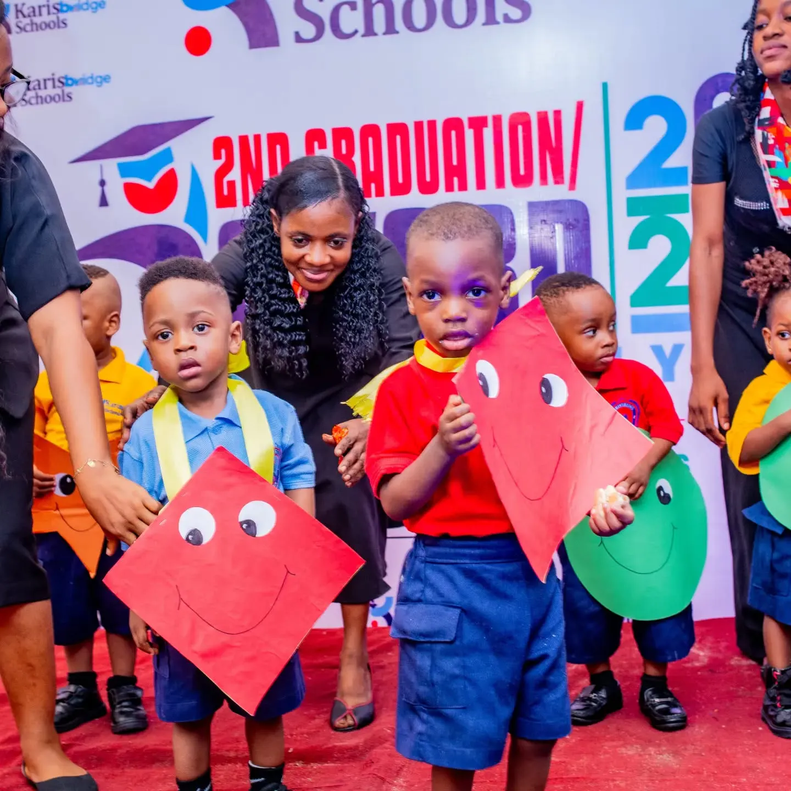
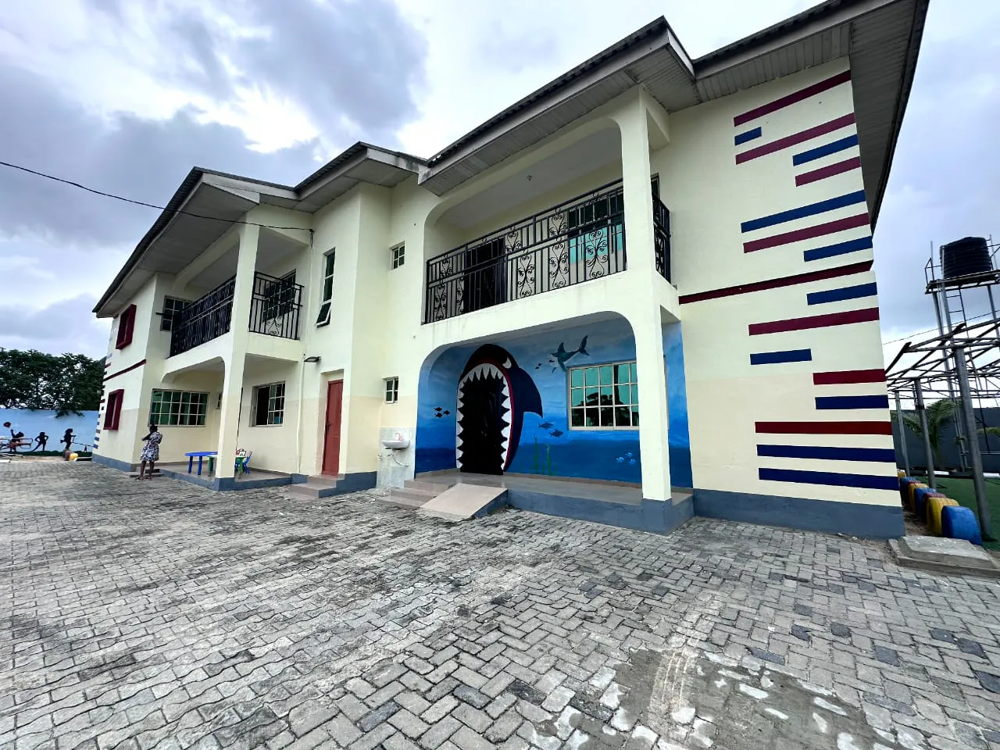
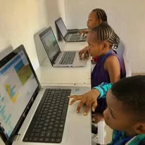
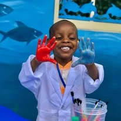
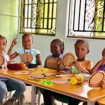
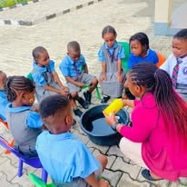
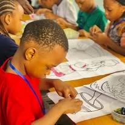
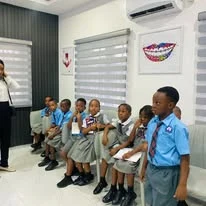
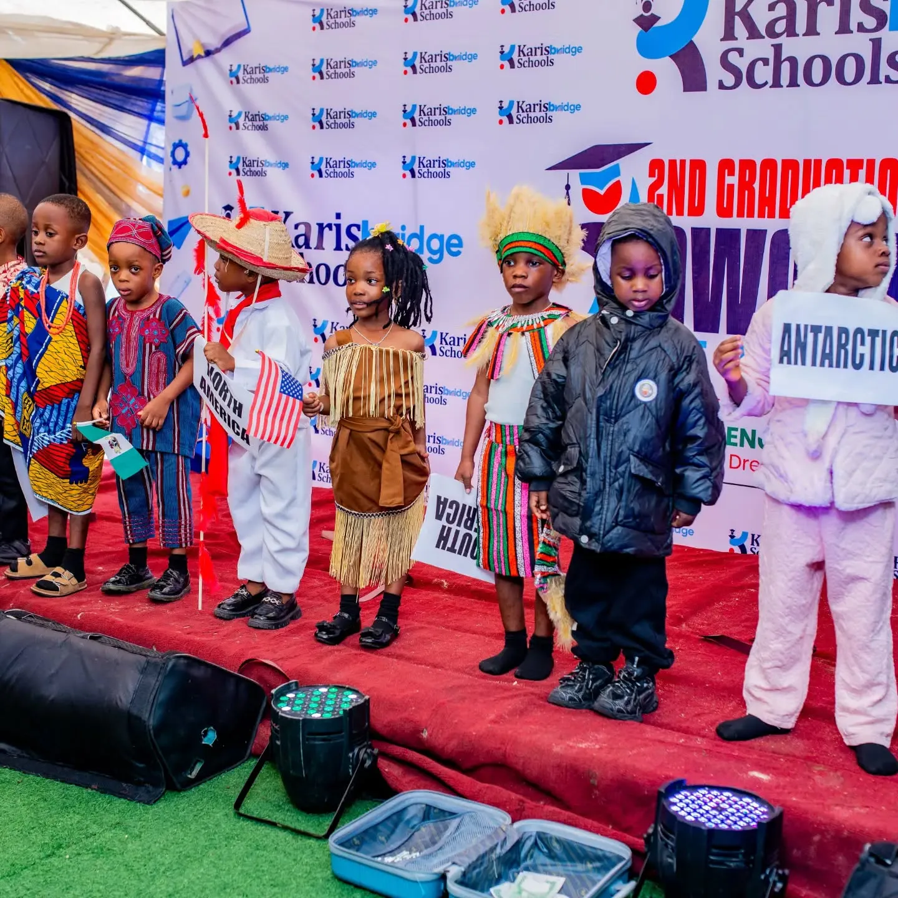
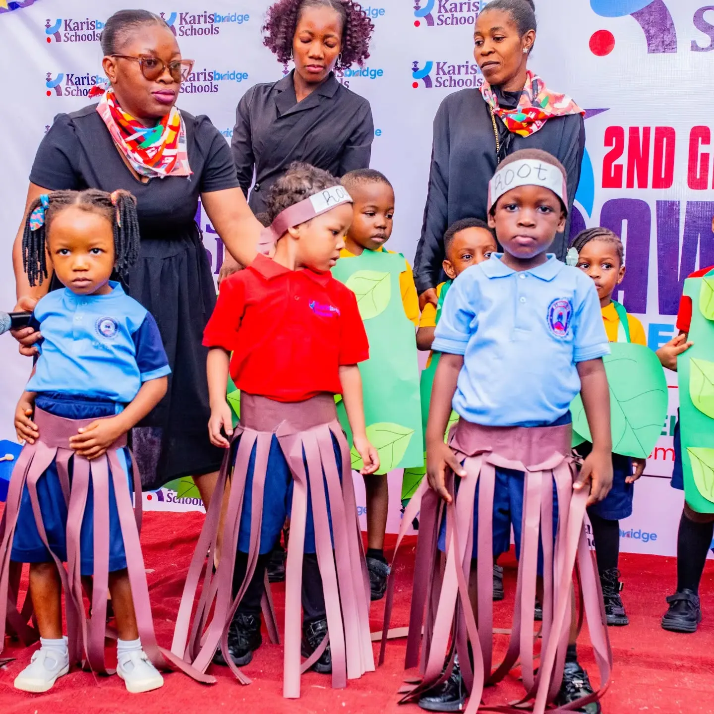

Gentle, attentive care with songs, stories and sensory play, and calm routines for feeding, rest and play.
About the crecheCreche · Nursery · Primary
Holistic education. Excellent character.
Karisbridge Schools is a creche, nursery and primary school in Kajola Estate, Ibeju-Lekki. Our children are cared for, taught well and encouraged to be their best, in the classroom and out of it.
Visits are by appointment, Monday to Friday. Call or WhatsApp 0904 011 8747.

Our youngest graduates with their teacher
- Classes
- Creche, Nursery & Primary
- Where
- Kajola Estate Phase 1, Ibeju-Lekki
- Our motto
- Show forth your light
- Visits
- By appointment, Monday to Friday
Welcome
We want every child who comes through our gate to feel safe, known and excited to learn. Strong foundations in reading, number and science sit alongside art, music, cooking, coding and plenty of time to play.

Karis comes from the Greek word for grace, and a bridge is what carries you from one place to the next. Together they describe what a good early education should be: kindness first, then the confidence to move on to whatever comes next.
Parents are very much part of it. Our teachers are easy to talk to, we keep families informed, and we make a point of celebrating every milestone together.
More about the schoolLearning
From the creche to primary school
Children can start with us in the creche and move up through nursery into primary, with teachers who know them well at every stage.
Learning through play: letter sounds, counting with real objects, art and music, and the confidence to stand up and perform.
About nurserySecure foundations in English, mathematics and science, with ICT and coding, projects and presentations that build real confidence.
About primaryAround the school
A week here is rarely quiet
A few photographs from our noticeboard: baking, coding, painting, experiments and a visit about healthy teeth.






Celebrations
Around the world in one afternoon
At our 2nd Graduation and Award Ceremony, the pupils took their families on a tour of every continent, from Asia to Antarctica, in costume and in song. The nursery class became the roots, leaves and flowers of a plant, and our youngest held up the shapes they had learned.
More from School life

Our motto
Show forth your light
The words are written on the stars our pupils carry on their first day of term. We want every child to know they have something good to offer, and to feel confident enough to share it.
Painted on our wall: We don’t bully. We love.
Admissions
Joining Karisbridge
We welcome enquiries for the creche, nursery and primary school. The best place to start is a visit, so you can see the classrooms and meet the people who will teach your child.
- 1
Get in touch
Call, send us a WhatsApp message or fill in the enquiry form.
- 2
Visit the school
Look around, meet our teachers and ask us anything.
- 3
Register
Complete the registration form and we will help your child settle in.
Visit us
Find us in Kajola Estate
- Address
- 1st Avenue, Kajola Estate Phase 1
Lekki–Epe Expressway, Ibeju-Lekki, Lagos - Visits
- By appointment, Monday to Friday